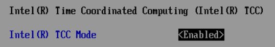

In this step, you will enable Intel® Time Coordinated Computing Mode (Intel® TCC Mode) in the BIOS. Intel® TCC Mode is an option that configures many individual settings in a single location. These settings are considered the out-of-box configuration for real-time applications and the starting point for exploring Intel® TCC Tools. Based on your use case, you may decide later to use a different configuration.
The following instructions apply to the BIOS versions specified in Prerequisites.
In the BIOS, set Intel Advanced Menu > Intel® Time Coordinated Computing > Intel® TCC Mode to <Enabled>.
Save your changes and exit the BIOS. The system reboots.
To learn more about Intel® TCC Mode, see the Real-Time Tuning Guide for the target system.